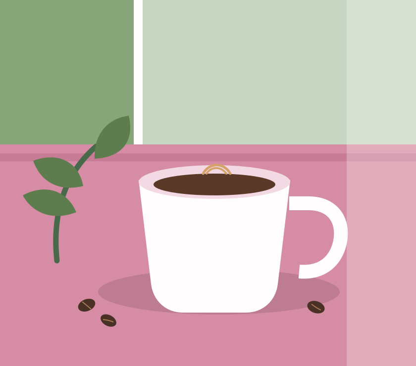

精選咖啡豆
用心挑選風味各異的咖啡豆，讓每次品飲都能遇見新的香氣。
A LITTLE PAUSE, EVERY DAY
在熟悉的香氣裡，找到自己的生活節奏。
讓咖啡，陪你慢下來。

A PLACE TO SLOW DOWN
天天咖啡相信，休息不是把時間填滿，而是為自己留一段空白。從一杯香氣溫柔的咖啡開始，讓忙碌的日子有個可以停靠的地方。
讀讀我們的故事THE LITTLE THINGS
一杯咖啡的好，來自耐心挑選，也來自自在相聚的時光。
用心挑選風味各異的咖啡豆，讓每次品飲都能遇見新的香氣。
以細緻烘焙呈現咖啡豆的特色，保留風味，也保留一份從容。
讓舒服的座位與咖啡香氣相伴，閱讀、聊天或發呆都剛剛好。
慢下來，才聽得見生活的香氣。
來打聲招呼